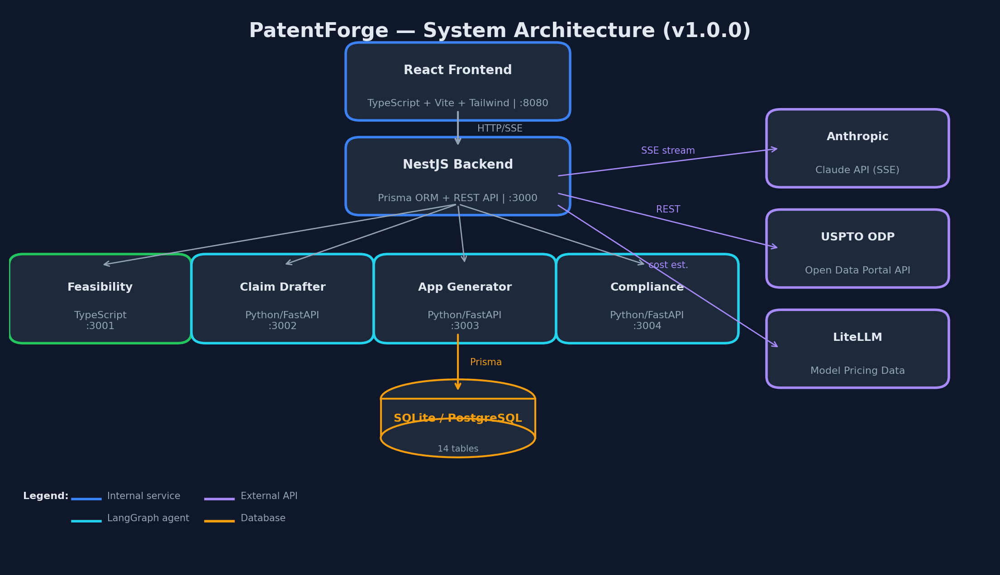
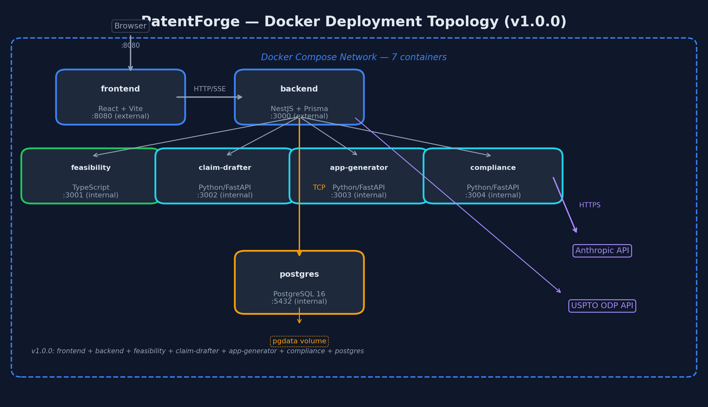

PatentForge is an open-source, self-hosted patent platform that takes inventors from "I have an idea" through feasibility analysis, prior art research, claim drafting, compliance pre-screening, and a complete USPTO-formatted patent application draft — all before your first attorney meeting.
Windows .exe (~100 MB) • Mac .dmg (~100 MB) • Linux .AppImage (~120 MB)
No Node.js, Python, or git required. Everything is bundled.
git clone https://github.com/scottconverse/patentforge.git cd patentforge cd backend && npm install && cd .. cd services/feasibility && npm install && cd ../.. cd services/claim-drafter && pip install -e . && cd ../.. cd services/compliance-checker && pip install -e . && cd ../.. cd services/application-generator && pip install -e . && cd ../.. cd frontend && npm install && cd .. cd backend && npx prisma db push && npx prisma generate && cd .. # Start: PatentForge.bat (Windows) or start each service manually # Open http://localhost:8080
6-stage AI pipeline restates your invention in patent terminology, searches for related art, identifies potential issues, and organizes findings into a structured report.
Automated patent search via USPTO Open Data Portal with stop-word filtering and title-weighted scoring. Lazy-load actual patent claims text from the USPTO Documents API on demand.
Watch the AI write its findings in real time. Stage progress indicators show exactly where you are in the pipeline. Re-run individual stages without restarting.
Pre-run cost estimate based on historical run data (within 25% of actual). Configurable cost cap with per-stage token tracking. ODP API usage tracking with weekly summary in Settings.
Runs on your machine. Hardened security: API keys encrypted at rest (AES-256-GCM). Optional Bearer token auth for network deployments. Invention data stays local.
Download findings as styled HTML, Word (.docx with full formatting), or Markdown. Word export for claims and compliance results. CSV export for prior art. Bring structured research to your first attorney meeting.
Four automated checks validate claim drafts against 35 USC 112(a) written description, 112(b) definiteness, MPEP 608 formalities, and 101 eligibility. Traffic-light PASS/FAIL/WARN results with MPEP citations and fix suggestions.
Multi-agent AI pipeline (Planner, Writer, Examiner) generates independent and dependent patent claims informed by feasibility analysis and prior art. Edit individual claims, view as dependency tree, export to Word.
5-agent sequential pipeline generates a complete USPTO-formatted patent application: background, summary, detailed description, abstract, and figure descriptions. Word export follows 37 CFR 1.52 with paragraph numbering, page numbers, and draft watermark.
Jest backend tests with supertest API integration coverage, Vitest component tests, pytest for claim-drafter, compliance-checker, and application-generator, Playwright browser E2E with screenshots and console checks, responsive viewport testing, and automated doc/version auditing. ESLint + Prettier enforcement, TypeScript strict mode across all services, and coverage thresholds enforced in CI. GitHub Actions CI on every push.
SHA-256 hashes of all AI prompt files verified at startup. Drift detection warns if prompts are modified. Prompts licensed CC BY-SA 4.0 so disclaimers survive forks.
After the research pipeline completes, generate patent claim drafts using a 3-agent AI pipeline. Each agent specializes in one phase of claim development.
Analyzes prior art & feasibility to create a claim strategy
Drafts 3 independent claims + dependents, capped at 20 total
Reviews claims for §101/102/103/112 issues, requests revisions
any types replaced with proper interfaces, shared utility extraction (slugify, disclaimer), auto-export opt-in setting, Node 24 CI migration.--accept-data-loss, configurable backend port, startup env validation with actionable errors, runtime source maps, form/modal accessibility fixes, real disclaimer-flow E2E testSix-service federated architecture managed by a Go system tray app. The installer bundles Node SEA binaries and portable Python — no runtime dependencies required. Internal services authenticated via shared secret. SSE streaming proxied through the backend. SQLite for development, PostgreSQL for Docker.

Figure 1: System Architecture (v1.0.0) — 6 services + system tray + 3 external APIs

Figure 2: Docker Compose Deployment Topology (7 containers)
Invention intake form, real-time streaming output, stage progress indicators, report viewer, claims tab with editable drafts.
Project CRUD, settings management, feasibility run tracking, claim draft orchestration, SSE event forwarding, prior art search via USPTO ODP, Word export. API keys encrypted at rest. Optional Bearer token auth.
6-stage sequential AI analysis pipeline. Each stage uses a markdown prompt template with the Anthropic Claude API. Streams tokens in real time via SSE.
3-agent claim drafting pipeline: Planner (strategy), Writer (claims), Examiner (review). LangGraph state machine with conditional revision loop. Generates up to 20 claims per draft.
5-agent sequential LangGraph pipeline generates a complete USPTO-formatted patent application: background, summary, detailed description, abstract, and figure descriptions. Word export follows 37 CFR 1.52.
4 specialized checker agents validate claims against 35 USC 112(a), 112(b), MPEP 608, and 101. LLM-native approach using Claude with structured prompts. Per-check cost tracking.
LLM processing + web search
Patent search + claims retrieval
Dynamic model cost estimation